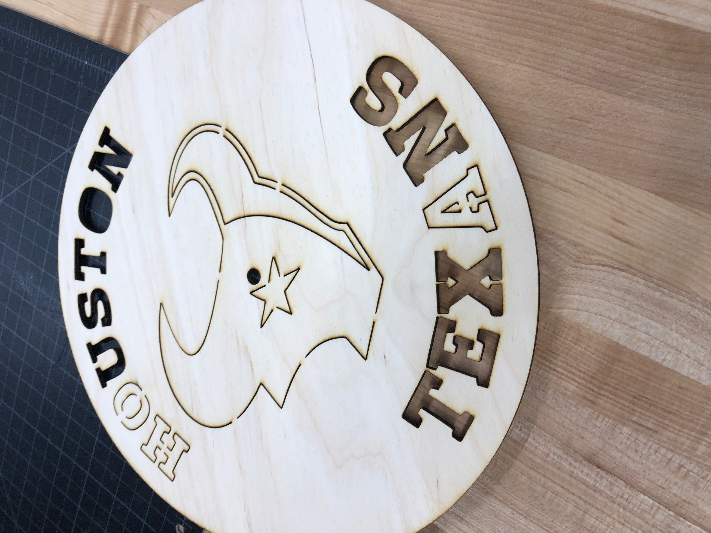

On Week 4, I used the Epilog Fusion Laser Cutter to make a Houston Texans clock. First, I imported a image of the Houston Texans logo to Coreldraw. Next, I hairline traced the logo and added support to it to make sure that some some parts of the logo wouldn't fall off after I cut it. Then, I saved the file in a USB and loaded it onto the laser cutter. I placed a 12" by 24" piece of 1/8 wood on the platform of the laser cutter and adjusted its position using the joystick on the machine. Finally, I used a combination of vector and raster cutting to cut out the clock. I spray-painted my clock to decorate it.
